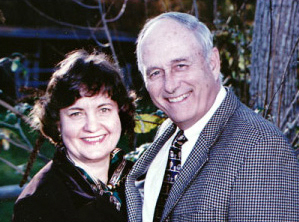

Katherine Rosenberry: A Case Study
This story begins on a winter evening, when I opened the book, The Sea Fairies by L. Frank Baum, I had just received from the Cal Poly Kennedy Library book borrowing service, only to find someone had penciled in their full name, Katherine Rosenberry, a full address, 511 Franklin St. Wausau, WI, and presumably the first and middle initial of their parent's name, M. B. Rosenberry! Of course, my first thought was, "I could totally find these people!" So, I googled and quickly found that Katherine's father has a Wikipedia page because he served on the Wisconsin State Supreme Court, and his full name is Marvin Bristol Rosenberry. A local news article revealed that te house at the address that was listed in the book was actually commissioned to be built by Marvin and completed construction in 1908. The family lived in that house for eight years, from 1908 to 1916, which was the year Marvin was appointed to the State Supreme Court, and is likely the reason for the move. Today, this house is a bed and breakfast you can pay to stay at known as the Rosenberry Inn, and is also on a haunted tour in Wausau.
Another interesting fact: since The Sea Fairies was originally published in 1911, and the Rosenberry's lived at 511 Franklin Street until 1916, the book I acquired was printed and sold between the years of 1911 and 1916, and is 100 years old!

I also found a digitized local news article about Katherine's marriage to Burton Henry White. They got married in July of 1924 at St. Andrews Episcopal church, and moved to New York shortly after. Katherine lived from 1901 to 1947, and the year after she passed, her husband remarried to a different Kathryn, spelled differently. Maybe he had a type? His obituary did not mention any surviving children, so there is no evidence of Katherine (or Kathryn) having any children. However, her younger brother Samuel's obituary showed that he did end up having a daughter. Interestingly, the obituary listed her as Mrs. Roger O. Hoit, and I had to dig through the obituary of Samuel's wife, Cicely, (obituaries are very useful!) to find her first name, Nancy. Through additional Google searches, I found Nancy and Roger O. Hoit's website for their architural firm. Cicely's obituary also mentioned their grandchildren, Roger and Sarah Hoit, and their great grandchildren, Morgan and Jackson.
Wondering how much further I could take this research into this stranger's family, I then googled 'Morgan Hoit' to see if I could find a match, which I immediately did! A New York Times article from 2023 talked about her marriage. The detail that affirmed my belief that this was the Morgan I was looking for was the fact that she was listed as 'Morgan Landfair Hoit.' Katherine's mother's maiden name was Kate Landfair, so the Landfair name continued through the generations up to the current generation! Through Morgan's socials, I also found out she recently debuted as a novelist last summer, bringing us full circle back to fictional literature!

While many have inquired as to whether I intend to contact Morgan or her brother Jackson (or link with them on LinkedIn) and explain my findings, I would advise against acting on the information one finds through this type of open source intelligence gathering (OSINT), unless it is for the purpose of helping improve their security and no other malicious or invasive action. However, I have promised my friends that if I were to ever end up working for the book publisher Morgan currently works for in New York, I would connect with her on LinkedIn and show her the zine I made summarizing this story.